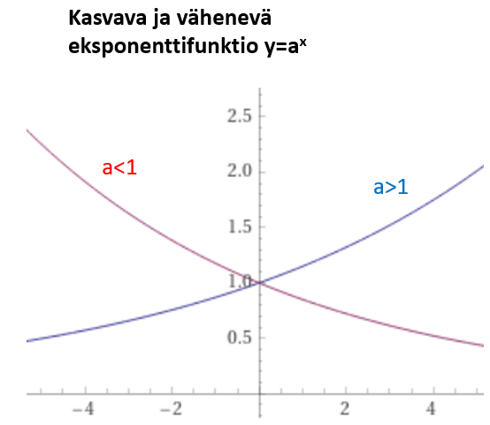

Eksponenttimalli ja logaritmi
Sisällys
Eksponenttimalli ja logaritmi¶
Eksponenttimallia käytetään mm. koronkorkolaskuissa. Muita sovellusalueita ovat esim. väestönkasvu, metsätaloudessa puun kasvu ja fysiikassa radioaktiivinen hajoaminen.
Eksponenttifunktio ja logaritmifunktio¶
Eksponenttifunktio \(y = a^x\)
Kantaluku a on positiivinen reaaliluku.
Ominaisuuksia:
Kuvaaja kulkee aina pisteen (0,1) kautta, sillä \(a^0 = 1\) riippumatta a:n arvosta
Funktio saa vain positiivisia arvoja
Jos a > 1, eksponenttifunktio on kasvava
Jos a < 1, eksponenttifunktio on vähenevä 
Logaritmifunktio y = \(log_{a}(x)\)
Logaritmifunktio on eksponenttifunktion käänteisfunktio:
ts. jos y = \(a^x\) , niin eksponentti x = \(log_{a}(y)\) (luetaan ”a - kantainen logaritmi y:stä”)
Harvoissa laskimissa on logaritmifunktio kaikille mahdollisille kantaluvuille a.
Esim. funktiolaskimissa on vain 10-kantainen logaritmi log(x) ja e-kantainen logaritmi ln(x), jossa kantalukuna on ns. Neperin luku e = 2.71828….
Minkä tahansa logaritmin \(log_{a}(x)\) voi laskea laskimen log - funktiota käyttän muunnoskaavalla
\(log_{a}(x)=\frac{log(x)}{log(a)}\)
Eksponenttiyhtälö¶
Eksponenttiyhtälön perusmuoto \(a^x = b\)
Yhtälössä sekä kantaluvun a, että vakion b on oltava positiivisia reaalilukuja.
Yhtälön ratkaisu on
x = \(log_{a}(b) = \frac{log(b)}{log(a)}\)
Talousmatematiikan esimerkkejä¶
Esim1. Kiinteistön arvo oli v.2010 alussa 125000 euroa. Oletetaan, että kiinteistön arvo nousee tasaisesti 2.5% vuodessa. Laske a) ko. kiinteistön arvo v.2016 alussa b) kiinteistön arvo v.1990 c) milloin kiinteistön arvo ylittää 160000 euron rajan
Vastauksia: a) 144962 euroa b) 76284 euroa c) v.2020 alussa
Ratkaisu:
Seuraavan vuoden arvo saadaan kertomalla edellinen ns. lisäyskertoimella 1 + p/100
2.5% vuosikasvua vastaava lisäyskerroin on 1.025
a) v.2016 kiinteistön arvo on \(125000*1.025^6 = 144962\)
b) v.1990 arvo saadaan jakamalla lisäyskertoimen potenssilla 20 \(125000/1.025^20 = 76284\) tai ekvivalentilla tavalla käyttämällä negatiivista eksponenttia \(125000*1.025^{-20} = 76284\)
c) Aika t, jonka kuluttua arvo ylittää 160000, saadaan ratkaisemalla eksponenttiyhtälö \(125000*1.025^t = 160000\)
Yhtälö viedään ensin perusmuotoon jakamalla puolittain 125000 :lla
\(1.025^t = 160000/125000 = 1.28\) , jonka ratkaisu on
\(t = log(1.28)/log(1.025) = 10.0\)
Kysytty vuosiluku on siten 2010 + 10 = 2020.
Esim2. Vuosimallin 2007 Fiat Punto maksoi v.2011 alussa 4900 euroa. Oletetaan että sen arvo putoaa 15% vuodessa. a) Kuinka paljon Punto maksoi uutena v.2007? b) Milloin arvo alittaa 1000 euron rajan?
Vastauksia: a) 9387 euroa b) v.2020 loppupuolella
Ratkaisu:
Lisäyskerroin on 1 - 15/100 = 0.85
a) v.2007 arvo on \(4900*0.85^-4 = 9387\)
b) Aika t, jonka kuluttua arvo on 1000 euroa, saadaan ratkaisemalla eksponenttiyhtälö
\(4900*0.85^t = 1000\)
Yhtälö viedään ensin perusmuotoon jakamalla puolittain 4900 :lla
\(0.85^t = 1000/4900 = 0.204\) , jonka ratkaisu on
\(t = log(0.204)/log(0.85) = 9.8\)
Kysytty vuosiluku on siten 2011 + 9.8 vuotta = 2020 loppupuoli.
Radioaktiivisen hajoamisen laki¶
Radioaktiivinen hajoaminen
Näytteen radioaktiivisuutta kuvaavan suureen symboli on A
Sen yksikkö 1 Bq (Bequerel), joka on sama kuin 1 hajoaminen sekunnissa.
Näytteen radioaktiivisuus noudattaa eksponentimallin mukaista lakia:
\(A = A_0 (\frac{1}{2})^\frac{t}{T}\) , missä
\(A_0\) on näytteen radioaktiivisuus alussa (ajanhetkellä t = 0)
T = ns. puoliintumisaika (= aika, jossa aktiivisuus puoliintuu)
t = aika
Esim3. 1 kg maanäytteen radioaktiivisuus ydinonnettomuuden jälkeen on 35000 Bq. Aktiivisuus johtuu jodin isotoopista, jonka puoliintumisaika T = 8 vrk. a) Mikä on saman näytteen radioaktiivisuus 30 vrk kuluttua? b) Monenko vuorokauden kuluttua aktiivisuus on enää 10 Bq?
Vastauksia: a) n. 2600 Bq b) 95 vrk kuluttua
Ratkaisu:
a) A(30 vrk) = \(35000*0.5^{30/8} = 2601\)
b) Ratkaistaan t eksponenttiyhtälöstä
\(35000*0.5^{(t/8)} = 10\)
Yhtälö viedään ensin perusmuotoon jakamalla puolittain 35000 :lla \(0.5^{(t/8)} = 10/35000 = 0.000286\) Tästä ratkaitaan ensin eksponentti t/8 \(t/8 = log(0.000286)/log(0.5) = 11.77\) Kerrotaan molemmat puolet 8:lla
\(t = 11.77\cdot 8\) vrk = 95 vrk
Keskikoron laskeminen¶
Joskus yhtälöstä \(a^x = y\) kysytään kantaluvun a arvoa, kun y ja x tunnetaan. Tästä esimerkkinä on keskikoron laskeminen koronkorkolaskuissa
Esim4. Anne sijoitti v.2012 osakkeisiin 8000 euroa ja myi osakkeet 7 vuotta myöhemmin 11500 eurolla. Mikä oli Annen saama keskimääräinen vuosikorko?
Vastaus: 5.3%
Ratkaisu:
Korkoprosentti p saadaan esiin laskemalla ensin lisäyskerroin a yhtälöstä
\(11500 = 8000\cdot a^7\)
Yhtälö on potenssiyhtälö, joka viedään ensin perusmuotoon
\(a^7 = 11500/8000 = 1.4375\) , josta
\(a = \sqrt[7]{1.4375}=1.053\)
Lisäyskerrointa vastaava prosenttiluku p ratkaistaan yhtälöstä a = 1 + p/100 , josta
\( p = (a-1)*100 \% = 5.3\% \)